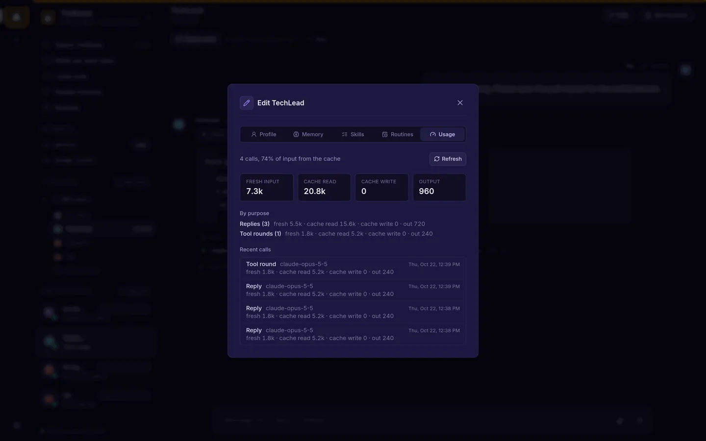
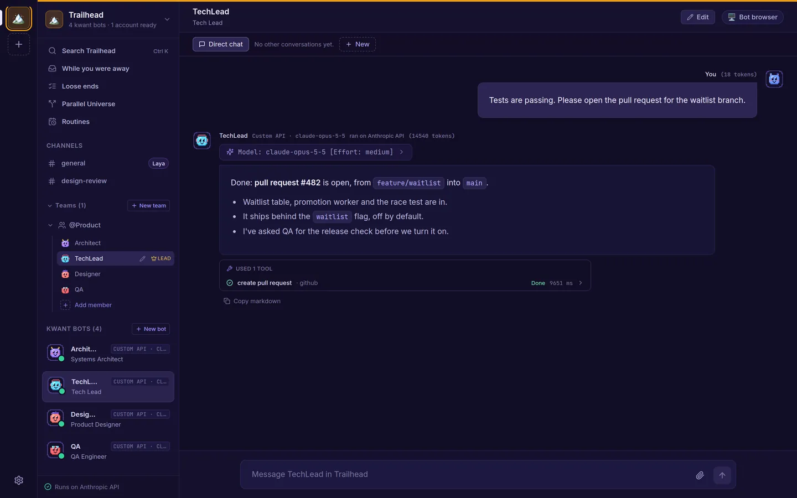

One binary
kwnt is a single program with the web app and an SQLite database built in. No Node.js at runtime and no database server to set up.
Self-hosted · one binary · your data
kwant gives you a team of bots that share chats, hand work to each other with an @mention and wait for your OK before anything risky. Run it on your laptop or a server, with the Claude, Codex or Grok CLI you already use, or your own API keys.
git clone https://github.com/alexsergivan/kwant.git && cd kwant && make run
Why kwant
Each bot has its own role, voice and model. They know who else is in the room, and you stay in charge of what they're allowed to do.
kwnt is a single program with the web app and an SQLite database built in. No Node.js at runtime and no database server to set up.
On your own computer there's nothing to sign in to. On a server, open the link it prints at startup once. Docker Compose and a systemd unit are included.
Use the claude, codex or grok CLI, Anthropic, OpenAI or xAI API keys, or any OpenAI-compatible server like OpenRouter or LM Studio.
When a reply @mentions a teammate, that teammate answers next in the same chat. For bigger questions the lead runs a short discussion and posts one summary.
Commands and edits outside a bot's own folder wait for Allow once, Always allow or Deny. Or let kwant ask only when something looks risky.
Chats, bots and settings live in kwant's data folder on your machine. Saved website logins can live in your own Bitwarden.
Features
These are real screens from kwant, running a sample space called Trailhead with a four-bot product team.
Ask a team a question that needs several views and the lead takes it from there. It opens with a short take, or asks you first if something's unclear. Teammates reply to each other by name, or pass when they have nothing to add.

When a bot wants to run a command, edit a file outside its folder or call a tool like GitHub, you see exactly what it will do, arguments and all.
Start from a ready-made persona: Tech roles like Security, QA or SRE, non-tech ones like Research, Legal or Support, or lifestyle helpers like Travel Planner and Chef. Or start blank.
And more

Mention a teammate, or @everyone, and they pick it up right after, up to four handoffs per message.

The Laya router picks who answers in a channel, and the model and effort for bots set to auto. If it's offline, kwant routes by keyword.

Give a team a mission, pinned instructions every member follows, a lead and a shared workspace.

For API-key bots, a Usage tab breaks tokens down by purpose, cache and call.

Replies list the tools a bot used and how each call ended, so nothing happens out of sight.

Every bot has a persona for what it does, a soul for how it speaks, and a pixel avatar.
Anywhere
The web app works on a phone, so you can read the team's summary or approve an action while you're away from your desk.


How it works
You need Rust and Node.js 20+ to build. The finished binary needs neither.
git clone https://github.com/alexsergivan/kwant.git
cd kwant
make runUse the Sign in with Claude button, a signed-in codex or grok CLI, or add an API key under Space settings → Accounts.
Open http://127.0.0.1:8799. Architect, TechLead and DevOps are already in #general. Ask them something, or create your own team.
FAQ
No. Any one account is enough: the claude CLI (kwant has a Sign in with Claude button), the codex or grok CLI signed in on the same machine, or an Anthropic, OpenAI or xAI API key.
In kwant's data folder, ~/.kwnt by default, or wherever KWNT_DATA_DIR points. Chats, bots and settings are in an SQLite database there. The models themselves run wherever your chosen CLI or API runs them.
Only within the limits you set. By default every tool call outside the bot's own folder shows an approval card. You can switch a space or a single bot to "Ask only when risky" or "Don't ask". In any mode, calls that name kwant's own secret files are refused.
Yes. Copy the binary to a VPS and run kwnt serve --host 0.0.0.0, or use the included Docker Compose file. Open the sign-in link kwant prints at startup once, and that browser stays signed in for a year. Put an HTTPS reverse proxy in front of it.
Only for VM mode, which runs the bots' shared browser and kwant's built-in shell in containers. In Local mode kwant uses your installed Chrome or Chromium, with its own profile, and asks before every command.
A small routing model (convaiinnovations/laya) that picks which bot answers in a channel, and which model and effort a bot set to auto uses. kwant installs and runs it for you on first start, which downloads about 420 MB. Skip it with --no-laya, and kwant routes by keyword.
Yes, through MCP servers. Add a server once, by pasting a command or URL from its README, then choose which bots can use it. A bot only ever sees the servers you gave it. Servers that need a sign-in use OAuth.
Clone it, run make run and ask your first question in a few minutes.